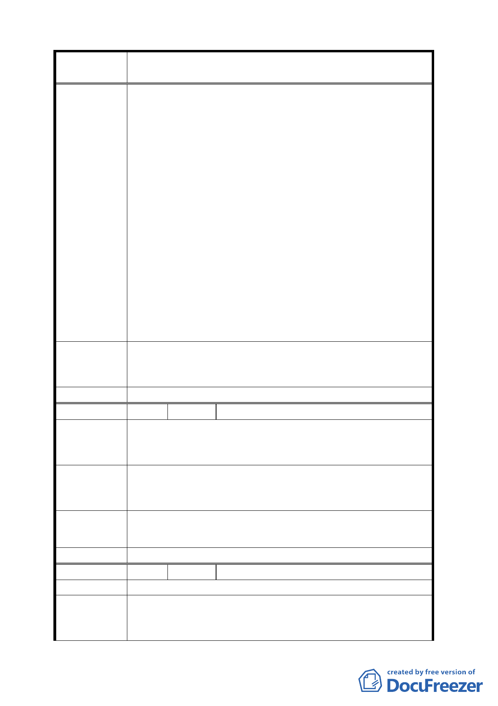

案
名
擬定臺北市中正區齊東街保存區及日式宿舍風貌保
存特定專用區細部計畫案
佔地寬廣、停車方便，建議興建一座「臺北市市政博
覽館」，仿效世界其他國際都市，以打造一座大型的
立體式市區規劃開發模型為主題，將臺北市的過去、
現在與未來集合於一堂，讓遊客來參觀後，對臺北市
的發展前景一目了然。
二、 「齊東街古蹟保存區」與「華山創意園區」僅一路（忠
孝東路）之隔，建議以地下道或天橋方式將兩區連接
起來，遊客在參觀「華山創意園區」後，可沿齊東老
街直接進入古蹟保存區，實地參觀台灣早期建築及生
活方式，並可在鳥語花香的叢林中享受品茗休息之樂
趣。
三、 在齊東街古蹟區內，分別規劃出古建築區、都市叢林
散步區、台灣工藝展市區、遊客休憩區及兒童遊樂區
等，提供遊客一個愉快的半日之旅。
四、 因「齊東街古蹟保存區」四周巷道狹窄，建議封閉齊
東街 53 巷，將古蹟區規劃為徒步區，禁止車輛進入
或設置攤販，以保持遊客安全及寧靜。
專案小組
審查結論
周邊土地使用之建議意見，請市府參考。
至於對本地區歷史建築使用構想，原則樂觀其成並請更多
元、廣度經營。
委 員會決 議 依專案小組審查結論辦理。
編 號 6 陳情人 陳佑祥先生
文化是人心的根本，而文化的永續與保留，更是立即的要
陳 情 理 由 項，當一切都是快速、便利的生活形態之後，只有歷史的
美、文化的樸，才可以使人放慢腳步，重新省思自己！
除了停止破壞現有的文化資產外，應將文化融入生活，使
建 議 辦 法 得生活即是充滿和諧的社區型態，而不是東一棟西一間的
突兀商業住宅、大樓來破壞。
專 案 小 組 對本地區歷史建築使用構想，原則樂觀其成並請更多元、
審 查 結 論 廣度經營。
委 員會決 議 依專案小組審查結論辦理。
編 號 7 陳情人 劉可強
陳 情 理 由 日式鄰里尺度之街道的保存與復原。
一、 臨 53 巷之圍牆建議降低到 1.2 公尺以下，透空率 50
建議辦法
％以上，以建構街道之整體性。
二、 臨 53 巷之歷史建物及古蹟基地，不得作地下層開挖，
10